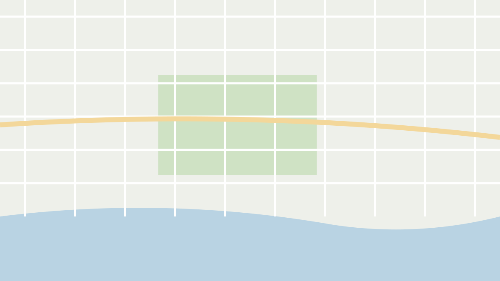

Responsive image
Responsive photos in every slot and the failed-image placeholder, in light and dark. Requirements: responsive-image.md.
Variants
The markup is the component's own: picture, three typed sources, an img with its width, height and loading attributes. The illustrated photos stand in for the real variants.

Review hero, informative,
priority: loading="eager" and fetchpriority="high"; picture sources AVIF, WebP, JPEG. The host fills the 16:7 hero box and the image covers it. AC-1, AC-4, AC-5, AC-9, AC-10, AC-23Gallery, informative, lazy, 4:5 shots,
sizes="(min-width: 62rem) 25vw, (min-width: 48rem) 33vw, 50vw". AC-1, AC-2, AC-3, AC-6, AC-7
Kensington Window Room
- All-in 2 h
- $80.00
- Score
- 3.2 out of 5
The Junction Loft
- All-in 2 h
- $145.00
- Score
- 3.8 out of 5
Leslieville Daylight Studio
- All-in 2 h
- $91.00
- Score
- 4.0 out of 5
Cards, decorative (
alt=""): the first card is the page's one priority image; the third card's photo failed and shows the icon only. AC-8, AC-13| Row | | |
|---|---|---|
| Shot 1 · Headshot |  | |
Compare table: the application's clipping spans (3:2 with
--radius-md, 4:5 with --radius-sm) size the host; the image fills it (D-1). AC-9Failed images
Failed hero: the fallback fills the same host box, with the image-failed icon and the alt text (studio/media-failed). AC-11, AC-12, AC-14, AC-23
Gallery with photos 2 and 5 failed: the slots keep their 4:5 box, the alt text shows in caption type, clamped to six lines, and each button keeps the whole alt text as its name. A new
image value renders the picture again. AC-11, AC-12, AC-16, AC-17Lightbox, photo 3 of 8 failed: the fallback fills the host box the lightbox sized for the photo (lightbox D-5); the arrows still work. AC-15


img[stFallbackImage] after an error: the image is hidden and the fallback follows it in the same box; with alt="" the icon only, otherwise the alt text. AC-18, AC-19States
Hover and focus are forced with data-state (documentation only); the image itself is never focusable.
| Slot | Loaded | Hover | Focus (on the surrounding control) | Failed |
|---|---|---|---|---|
| Shot (informative) | ||||
| Card photo (decorative) | |
| Focus is on the card's name link |
Both themes
Kensington Window Room
- All-in 2 h
- $80.00
- Score
- 3.2 out of 5
Leslieville Daylight Studio
- All-in 2 h
- $91.00
- Score
- 4.0 out of 5
Kensington Window Room
- All-in 2 h
- $80.00
- Score
- 3.2 out of 5
Leslieville Daylight Studio
- All-in 2 h
- $91.00
- Score
- 4.0 out of 5
Responsive
The image does not change by breakpoint; its slot does (hero 3:2 below 48rem and 16:7 from 48rem; two, three or four shot columns). Each frame is a real viewport.
Contrast
Alt text in the fallback · --color-fg-muted on --color-bg-photo
Image-failed icon · --color-fg-subtle on --color-bg-photo
Dark: Alt text in the fallback · --color-fg-muted on --color-bg-photo
Dark: Image-failed icon · --color-fg-subtle on --color-bg-photo
Tokens
| Part | Token | Light | Dark |
|---|---|---|---|
| Fallback and loading ground | --color-bg-photo | ||
| Fallback alt text | --color-fg-muted | ||
| Fallback icon | --color-fg-subtle | ||
| Fallback padding | --space-3 | ||
| Fallback gap | --space-2 | ||
| Fallback type | --text-body-sm | ||
| Fallback icon size | --icon-size-md | ||
| Hover zoom duration | --duration-slow | ||
| Lightbox and shot corners | --radius-md | ||
| Card and hero corners | --radius-lg |
Performance
The
responsive-image/performance harness scenario: the hero with priority and eight lazy gallery photos; the second variant fails photos 2 and 5. AC-22